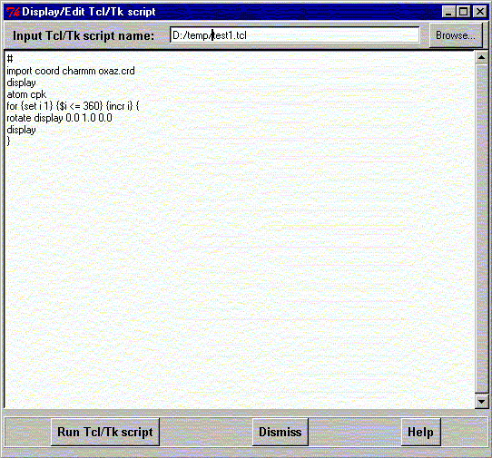

**************************************************************************
Run, edit and save Tcl/Tk script widget
Leif Laaksonen CSC 1999
**************************************************************************
Import, edit, run and save a Tcl/Tk script with this simple editor. Write the name of
the Tcl/Tk script and press
It is also possible just to write the Tcl/Tk script in the text widget.
When the script is ready just press the "Run Tcl/Tk script" button. While the script is active (run) the widget backround is red and it is not possible to modify the text in the widget.

Line command: no line command available
**************************************************************************
LUL/1999
**************************************************************************